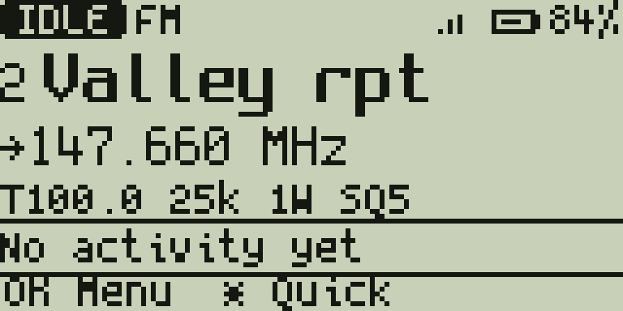
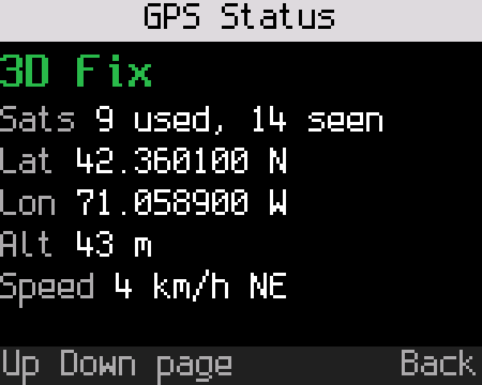
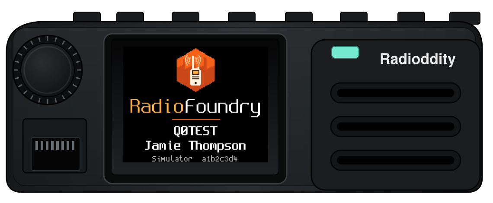
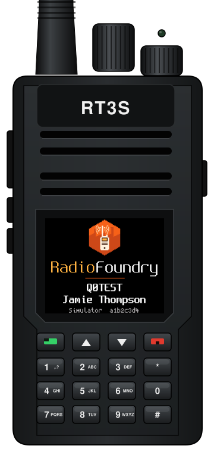
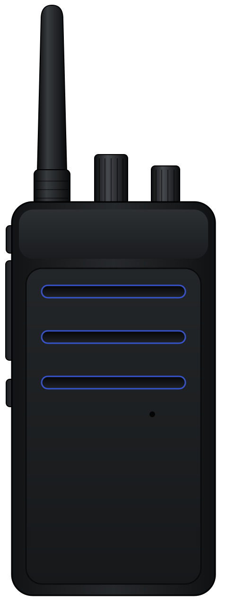

Full
Every feature the radio supports.
Leaves out: Nothing
Open-source multi-mode firmware for digital radios: DMR, P25, NXDN and FM. MIT licensed.
Free forever. Installs on your radio directly from your browser, using any operating system; no software download required.








Supported
FM·DMR·P25·NXDN · 136-174 / 400-480 MHz · Air band AM 108-137 MHz · Broadcast FM 87-108 MHz

Retevis RT84
Supported
FM·DMR·P25·NXDN · 136-174 / 400-480 MHz

Baofeng DM-1801
Supported
FM·DMR·P25·NXDN · 136-174 / 400-470 MHz · Air band AM 108-137 MHz · Broadcast FM 87-108 MHz

Kydera CDR-300UV
Supported
FM·DMR·P25·NXDN · 136-174 / 400-480 MHz · Broadcast FM 87-108 MHz

TYT MD-390, Retevis RT3
Supported
FM·DMR · 400-480 MHz or 136-174 MHz (one band per radio)

TYT MD-UV390, TYT MD-UV390 Plus 10 W
Supported
FM·DMR·P25·NXDN · 136-174 / 400-480 MHz

Supported
FM·DMR·P25·NXDN · 136-174 / 400-480 MHz

Retevis RT90
Supported
FM·DMR·P25·NXDN · 136-174 / 400-480 MHz

Supported
FM·DMR·P25·NXDN · 902-928 MHz
Every feature the radio supports.
Leaves out: Nothing
For amateur radio. Leaves out business features.
Leaves out: Basic privacy (Motorola / Anytone BP), Motorola TMS text format, ARS registration, LRRP location, Control station mode (boot as network, PC answers data, fixed link), SNMP v2c agent and traps (USB and over the air)
For business and public service radios. Leaves out amateur-only features.
Leaves out: MMDVM hotspot, APRS: AFSK positions, status, messages; DMR positions; KISS TNC
Customize your own software build with the features you want, directly from the browser.